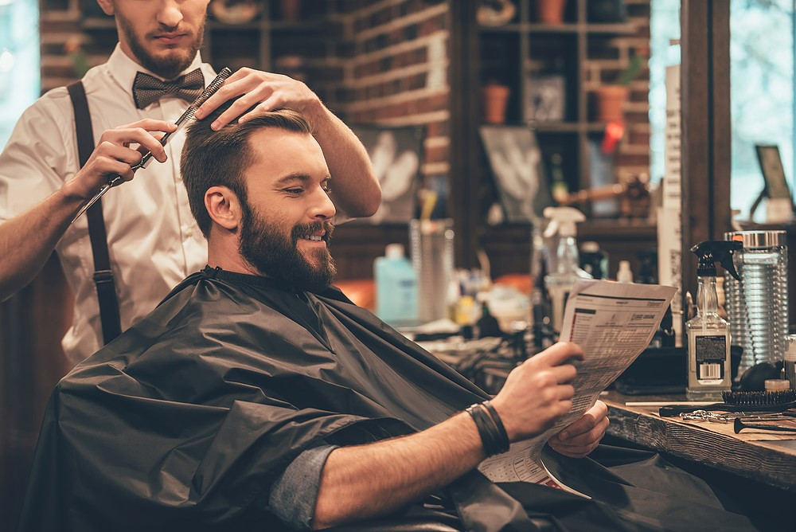

Un poco de historia
Peluquería "San Miguel" Nace en el año 2018, como un proyecto personal para poder brindarle a la poblacion, amigos y familiares un servicio de calidad en los diferentes tipos de peinados, cortes y estilos de barbas que actualmente son una tendencia, ese era mi principal objetivo como peluquero.
Como toda pequeña empresa empezamos en un pequeño local, con solamente un asiento para poder trabajar; poco a poco con la gracia y bendicion de Dios los clientes empezaron a aumentar, y los ingresos se multiplicaron en un par de meses, posteriormente fui adquiriendo mas equipos y personal capacitado en la atencion a los clientes, con conocimientos de barberia, estilismo, etc.
Mi meta es seguir creciendo en el negocio, manteniendo al equipo a la vanguardia de estilos, peinados y cuidados de cabello para hombres y mujeres. Inclusive para barbas, ya que una peluqueria no esta completa sin tratamientos para estilizar una buena barba.
-Nestor Hernandez. Peluquero y propietario.
Nuestra Mision
Ser una peluqueria rentable y de referencia en nuestra comunidad, un equipo a la vanguardia en las ultimas técnicas y tendencias en cortes de cabello para niños,jovenes y adultos, en constante evolución mediante el desarrollo personal y profesional.
Nuestra Vision
Satisfacer las expectativas en cuanto a imagen personal se refiere de todos nuestros clientes, Ofreciendo servicios y asesoramiento de excelencia de alta calidad, mediante las técnicas y tendencias más actuales, en un entordo comodo, alegre y caluroso.